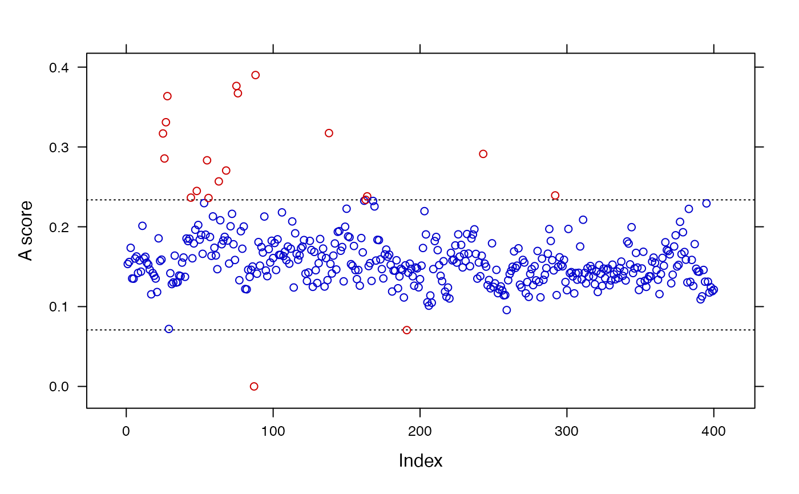

screenSpectra.RdThis function implements a quality control check to help in the identification of possibly faulty, low-quality raw mass spectra. It computes an atypicality score and labels suspicious profiles for further inspection and filtering.
screenSpectra(x, meta = NULL, threshold = 1.5, estimator = c("Q", "MAD"), method = c("adj.boxplot", "boxplot", "ESD", "Hampel", "RC"), nd = 1, lambda = 0.5, ...)
| x | A list of |
|---|---|
| meta | (optional) Matrix or vector containing metadata associated to |
| threshold | Multiplicative factor used in computing the upper and lower fences to determine passes and failures. It is related to the actual method used to compute the fences (see |
| estimator | Robust scale estimator used:
|
| method | Method used to compute upper and lower fences for the identification of atypical mass spectra.
|
| nd | Order for the derivative function of the mass spectra (default = 1). |
| lambda | Weight given to each component of the atypicality score (values in [0, 1], default = 0.5, see details below). |
| ... | Other arguments. |
The procedure computes an atypicality score (A score) based on a weighted function of two components: (1) a robust scale estimator (Q or MAD) of the n-order derivative (computed using Savitzky-Golay smoothing filter) of scaled mass spectra and (2) the median intensity of the signals. Given a method to determine tolerance fences, a mass spectrum is labelled as potentially faulty, low-quality according to the magnitude of its A score. The adj.boxplot method based on the Q scale estimator and equal weights to both components (lambda = 0.5) are the default options. The greater lambda the higher the weight given to the scale estimator in the A score. The function produces summaries and a list of mass spectra and (if given) associated metadata in which the identified cases were filtered out.
An object of class scSpectra with elements:
List of mass spectra (MassSpectrum class) with potential low-quality cases filtered out.
Associated filtered metadata (data.frame object).
Results table showing the mass spectra ID, A score and label (pass/failure).
Other details (see method summary.scSpectra for scSpectra objects).
See methods summary.scSpectra and plot.scSpectra for scSpectra objects.
# Load example data data(spectra) # list of MassSpectra objects data(type) # metadata # Results using different settings sc.results <- screenSpectra(spectra) sc.results <- screenSpectra(spectra, type) sc.results <- screenSpectra(spectra, type, method = "RC") sc.results <- screenSpectra(spectra, type, threshold = 3, estimator = "MAD", method = "Hampel") # Numerical and graphical summary summary(sc.results)#> (10 first mass spectra) #> ID A score Class #> 1 160408F21 0.1533490 success #> 2 160408F22 0.1558803 success #> 3 160408F23 0.1736287 success #> 4 160408F24 0.1352231 success #> 5 160408G01 0.1349331 success #> 6 160408G02 0.1602482 success #> 7 160408G03 0.1628105 success #> 8 160408G04 0.1421277 success #> 9 160408G05 0.1578878 success #> 10 160408G06 0.1437707 success #> #> ---------------------------- #> #> Scale estimator: MAD #> Method: Hampel #> Threshold: 3 #> Limits: [0.0708,0.2337] #> Deriv. order: 1 #> Lambda: 0.5 #> No. potentially faulty spectra: 20 (5 %)plot(sc.results)# Save filtered data for further pre-processing filtered.spectra <- sc.results$fspectra filtered.type <- sc.results$fmeta